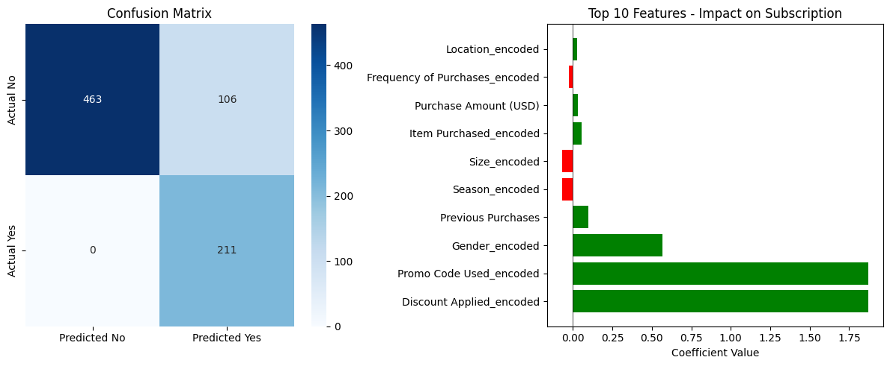

Machine Learning
Classification using Logistic Regression to predict Subscription Status.
Model Summary
- Model: Logistic Regression (Classification)
- Target: Subscription Status (Yes/No encoded as 1/0)
- Train/Test Split: 80% / 20%
- Accuracy: 0.864 (86.4%)
- Confusion Matrix: TN=463, FP=106, FN=0, TP=211
- Most important factors (by coefficient): Discount Applied, Promo Code Used, Gender, Previous Purchases, Season
:contentReference[oaicite:10]{index=10}
Results Visualisation
Confusion matrix and top feature impact plot (exported from the ML script).

Plain-English Explanation
The model attempts to predict whether a customer is a subscriber based on shopping behaviour and customer attributes. An accuracy of ~86% means the model correctly predicted the subscription status for most customers in the test set. Like all models, performance depends on the quality of the dataset and the features included. :contentReference[oaicite:11]{index=11}